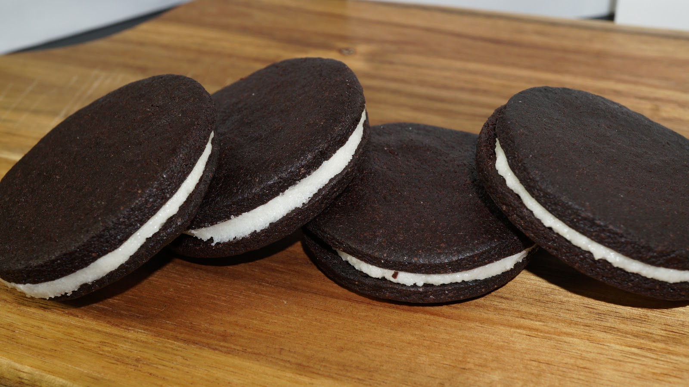

Oreo cookies are a true classic. They are a sandwich-style cookie composed of two crispy exterior halves and a soft icing filling. Originally created in 1912, there have been nearly 500 billion Oreo cookies made, making them the best-selling cooking in American history.
They are also a cultural icon in similar fashion to Coca-Cola, with plenty of television and movie references. Loved for generations, there are many ways of enjoying an Oreo. Whether you prefer the classic and want to learn to split an Oreo without breaking the filling like John Malkovich's character Teddy KGB in Rounders or you want to mix it up and try other ways of enjoying Oreo cookies, we have you covered.
So here you have few steps to eat your delicious Oreo cookies as you can see below.....
Grasp each half of the Oreo cookie softly but firmly with the fingertips of both of your hands. Being smooth and stable is the key here. Don't grasp the Oreo too tight, and definitely don't wiggle the cookie back and forth. Grasping too tight or wiggling may lead to the filling failing to separate cleanly. Make sure that both the Oreo and your hands aren't too warm. Warm hands will warm the Oreo and soften its filling, making it more gooey and sticky. A warm Oreo is harder to separate. Don't grip the Oreo for too long. The longer you hold the Oreo without starting the next step, the more likely it is to start to warm up.
With each half of the Oreo in your fingertips, begin to smoothly rotate your hands in opposite directions. Most Oreo experts rotate the half that is in their dominant hand towards them, while gently rotating their non-dominant hand away from their body.
As you gently rotate you will feel a gentle pop come from the Oreo. This is your signal to separate the Oreo by moving your hands apart from each other. It is best to gently pull away so that the filling-covered half of the Oreo and the non filling-covered half of the Oreo don't accidentally bump.
With proper technique and a little luck, you should have one half of the Oreo that is completely clear of filling and one half with all of the filling. If so, success! If not, don't worry. This only means that you need to practice by separating (and eating!) more Oreo cookies.
There is no 100% correct way to eat an Oreo, but there aren't any incorrect ways either. Now that your Oreo is ready, you are free to do as you choose. You could even put the Oreo back together, knowing that you were successful. Regardless of what you choose, enjoy the pairing of the sweet taste of victory and the delightful crunch of Oreo cookie. Some people enjoy saving the filling-covered side for last, enjoying it in one delicious bite. Another popular eating method is to scrape the filling from the covered side off of the cookie with your teeth.
Put the cookie back together, and proceed to dunk the cookie in the glass of milk